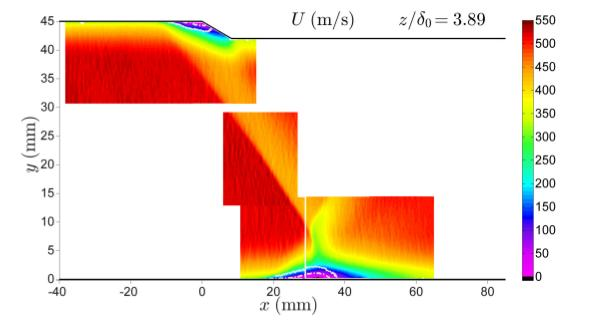

|
Langley Research CenterTurbulence Modeling Resource |
Exp: Shock Boundary Layer Interaction at M=2.05
Return to: Data from Experiments - Intro Page
Return to: Turbulence Modeling Resource Home PageThe data on this page were provided by Laura Campo and
John K. Eaton.
These experimental data are for shock
boundary layer interaction (SBLI) flows with M=2.05 freestream in a low aspect ratio geometry, with documentation of the 3-D effects.
The oblique shock is generated by a fully spanning 20 deg
compression ramp on the top wall of the test section. The flow is documented for two ramp
heights, hramp = 3mm and 5mm (hramp/delta0 = 0.56 and 0.93), using streamwise-vertical
measurement planes at four locations across the span.
The data were taken at Stanford University, as described in the reference.

Documentation for the experiment can be found in:
For the baseline experiments, a README file and a tarred,
gzipped file with the experimental data are provided here (note most data are in MATLAB files):
An uncertainty quantification (UQ) database is also
provided, which details the effects of small perturbations to the inlet geometric boundary conditions. A README file and a tarred,
gzipped file with the experimental data are provided here:
Return to: Data from Experiments - Intro Page
Responsible NASA Official:
Ethan Vogel
Page Curator:
Clark Pederson
Last Updated: 07/16/2018